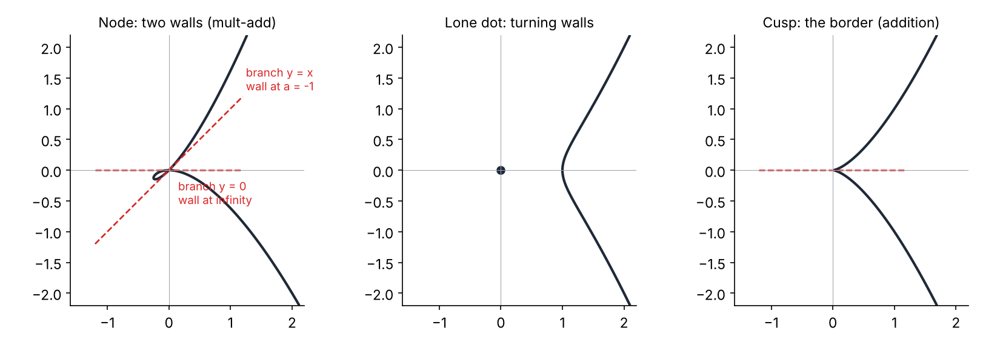
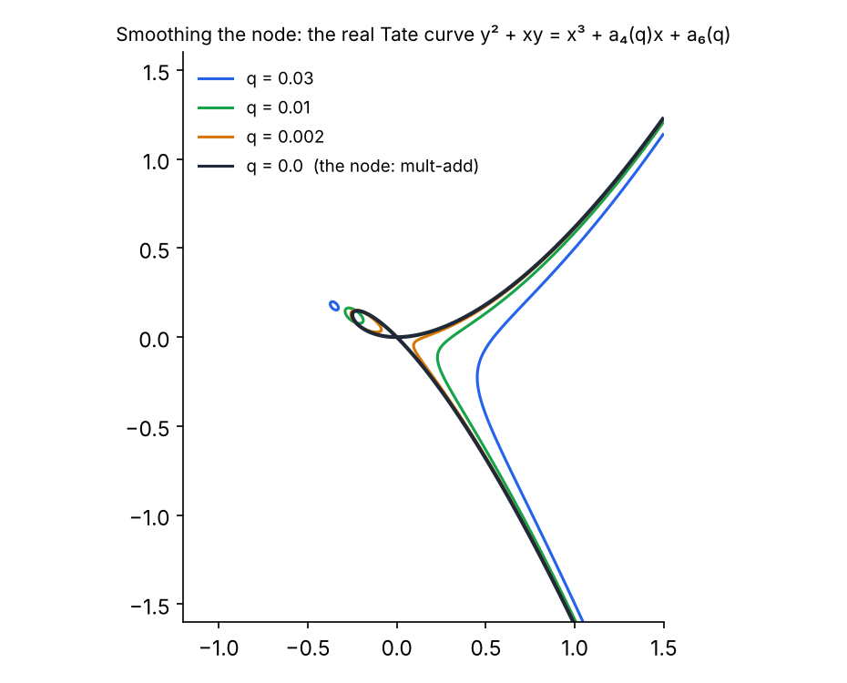
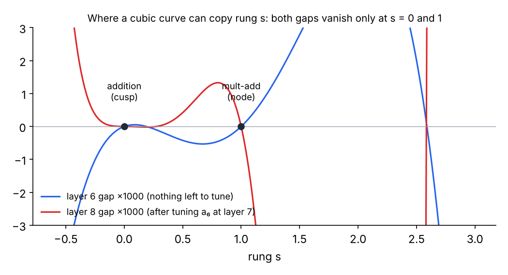
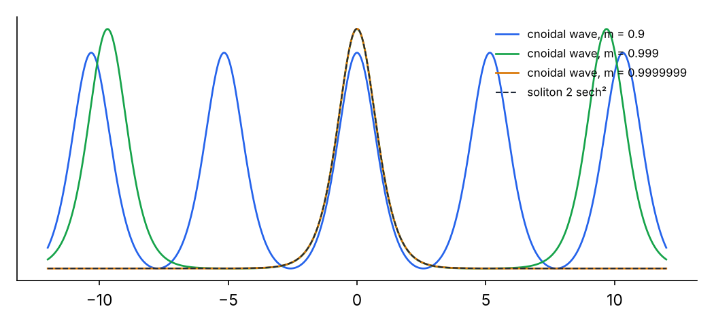
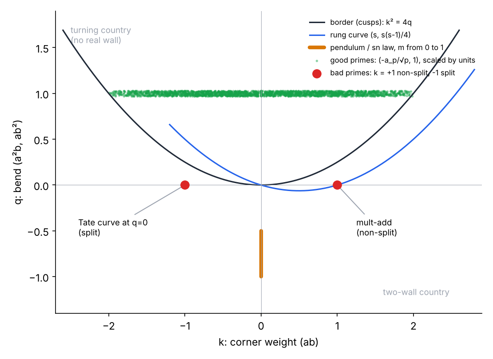
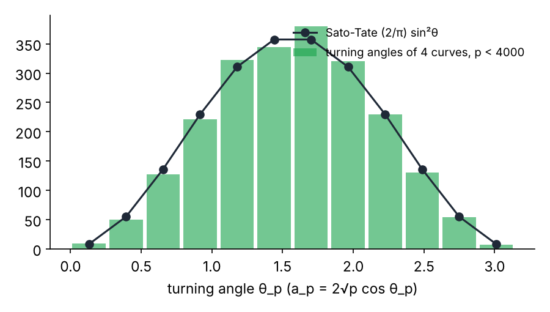
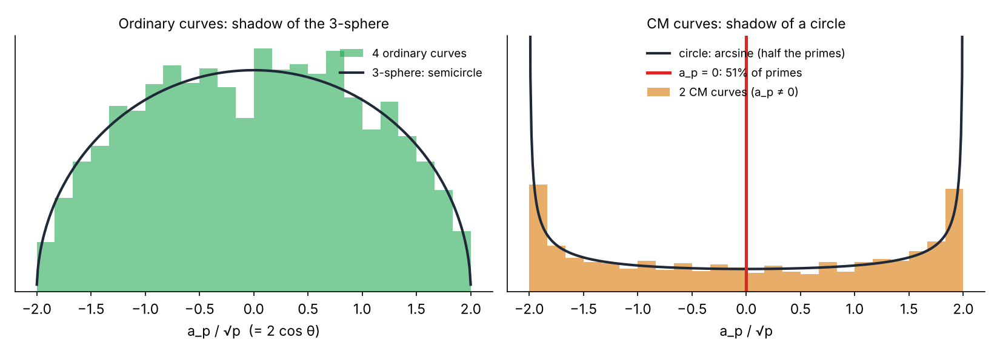
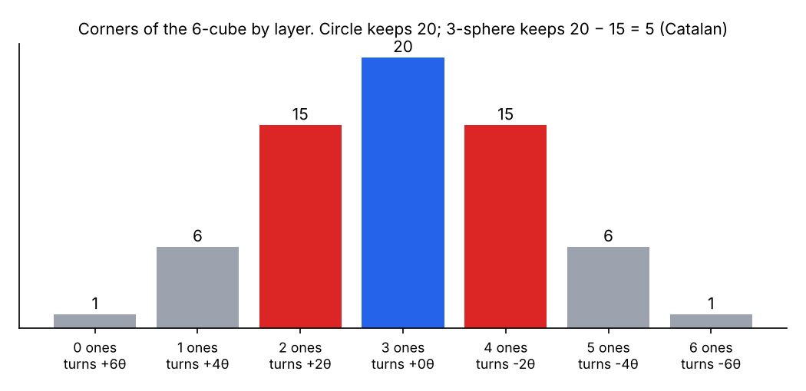

An elliptic curve is the circle operation ∘₁ (called mult-add before 1.0) with one extra rule: multiplying the lift 1 + a by a fixed number q changes nothing. That rule closes the circle operation's one loop into a torus with two loops. The rung tower never makes a second loop, and the test below shows a cubic curve can copy a rung only at the two singular corners: addition (the cusp) and the circle operation (the node).
Your hunch is still half right: the circle operation is the exact point where the elliptic direction leaves the tower. It's closer to the circle operation than to addition, because q opens out from the node, not from the cusp.
Take the curve y² + a₁xy = x³ + a₂x². Every line y = t·x through the double point hits the curve once more, at x = t² + a₁t − a₂. Adding points by the chord rule, in the coordinate z = −x/y, gives exactly the landscape's law (z₁ + z₂ + k·z₁z₂)/(1 − d·z₁z₂) with k = −a₁ and d = −a₂. No extra terms at any layer.
The walls are the node's two branches. Since z = −1/t, z runs into a wall exactly when the line's slope t matches one of the two tangent slopes at the double point. The circle operation's curve y² − xy = x³ has branches y = x (wall at −1) and y = 0 (wall at infinity). The lens (t − m₁)/(t − m₂) built from the two slopes turns the chord rule into plain multiplication.
Two real branches is the two-wall country, a lone dot with complex branches is the turning country, and the cusp, where the branches merge, is the border. Over a prime p the three countries even count differently: p − 1 smooth points, p + 1, and p.
Qubit noise at k = −4/3 is the node y² + (4/3)xy = x³; its finite wall is at error chance 3/4, the fully mixed state. So the node is the point of total noise.


Tate's curve y² + xy = x³ + a₄(q)x + a₆(q), with a₄ = −5q − 45q² − … and a₆ = −q − 23q² − …, is the standard way to smooth a node. At q = 0 it is the node itself, and its coordinate is z = 1 − 1/u. So your lift 1 + a (with a = −z) is exactly 1/u, Tate's parameter.
For q ≠ 0 the points are still numbers u, still added by multiplying, with one new rule: u and q·u are the same point. The circle operation lives on a cylinder (one loop, the walls at its two open ends). The rule glues the ends with a twist, which makes a torus. Checked at q = 0.05 with complex u to 29 digits.
Two more measured facts: q first changes the law at the cube's fifth layer, so Tate's curve and the circle operation (mirrored, a → −a) agree through four layers. And its j-invariant is 1/q + 744 + 196884q + …, so the whole landscape plane is one point, j = ∞, in the space of elliptic curves. q is the road out of that point.
Two laws in the same coordinate are equal exactly when their logs are equal. Rung s has log E−s. A curve's log comes from its differential, whose layer-n term depends only on coefficients of weight n. A curve has five dials, a₁ a₂ a₃ a₄ a₆, and no a₅. So I tuned a₁ to a₄ to copy rung s through layer 5. Layer 6 has nothing left to tune: that's the test.
| Layer | What fits rung s |
|---|---|
| 2, 3 | a₁ = −s, a₂ = −s(s−1)/4 (the rung curve on the map) |
| 4, 5 | a₃ = s(s−1)/24, a₄ = s(s−1)(11s−4)/288 |
| 6 | gap −s(s−1)(45s² − 125s + 22)/17280, zero only at 0, 1, 0.189, 2.589 |
| 7 | a₆ tuned |
| 8 | gap zero at 0, 1, 0.274, 2.584: no common root with layer 6 besides 0 and 1 |
The curve fitted to rung s has discriminant proportional to s²(s − 1). So the only rungs a cubic copies are the ones where the curve is singular: the cusp (s = 0) and the node (s = 1). Rung 2 fails at layer 6 too, by 1/180.
Why it can't be a fractional rung at all: a fractional rung's log diverges (Baker 1958, Erdős and Jabotinsky 1960, the landscape's gap 5), while an elliptic curve's log always converges near 0. That holds in any smooth change of coordinate. Why it's a new direction: rung 1 and up have one loop (ex − 1 repeats every 2πi, and so does rung 2), and elliptic functions have two.
Near misses, honestly: two irrational rungs, 0.189 and 2.589, can be copied through layer 7 by a genuine elliptic curve before failing at layer 8.

KdV's periodic wave 2k²m·cn²(k(x − ct) | m) is the elliptic version of the soliton. As the spacing between crests grows, Tate's q falls to 0 and the train becomes the single soliton 2k²sech²: gap 2 × 10⁻⁸ at q = 6 × 10⁻¹⁰. The soliton's circle-operation cube with corners {0,1}ᴺ is the q → 0 edge of a theta function that sums over every whole number (known: Dubrovin, Krichever).
Pendulum phases add by Jacobi's sn law, which sits on the map at corner 0 and bend −(1 + m)/2: small swings at (0, −½), the separatrix at (0, −1). At the separatrix the law is exactly velocity addition, a node. Every swing in between is a real elliptic curve.
Ochanine's elliptic genus becomes the lens law (a + b)/(1 + δab) exactly on its nodal edge, and at δ = 1 that is the signature's law, velocity addition. And Hirzebruch's χ_y line, which held Todd (the circle operation) and the signature, is the q = 0 face of the two-variable elliptic genus (Krichever, Höhn, Totaro; cited, not rechecked here).
A Frey curve y² = x(x − A)(x + B) has discriminant 16A²B²(A + B)² and reduces to a node, never a cusp, at every odd bad prime: always off the border. That is semistable. Ribet's step in the proof uses Tate's curve at those primes: for a real Fermat solution, each bad prime's q is a perfect p-th power up to a unit, so the p-torsion can't see the prime.

Rung constants and the noise floor at −2 have no elliptic content that I found: every point on the straight line is the same multiplicative group in other units.
An elliptic curve's L-function has one factor per prime. At a good prime it is 1 − a_p T + p T², exactly a wall polynomial 1 + kT + dT² at (k, d) = (−a_p, p). At a bad prime it is 1 − a_p T, on the straight line d = 0.
Measured for 4 curves and every prime under 4,000:
The question this hands you: Hasse's theorem says Frobenius never leaves the turning country. Can the circle-operation cube, which already produced the 1, 3, 7 spheres, show why the angles live on S³? The standard reason is Galois representations and symmetric-power L-functions. A cube-native reason would be a new view.


The 3-sphere comes straight out of the circle operation in four steps, all known math in new clothes. What the circle operation can't show is why the primes spread evenly over that sphere. That part is the deep theorem, proved in 2011.
Swap the number 1 + a for the matrix I + a·G, where G has trace k and determinant d. Then (I + aG)(I + bG) = (1 − d·ab)·(I + (a ⊕ b)·G), and a ⊕ b is exactly the landscape's law at (k, d). The circle operation is the case where G is the plain number 1.
A torus has a cube of holes 1, 2, 1: one point, two loops, one area. Frobenius turns the two loops with trace a_p (G is the same up to a sign), and it stretches the area by p, which is the determinant. Counting fixed points the way the topology page did gives the curve's point count, 1 − a_p + p: the wall polynomial at 1.
Dividing by √p keeps the area exactly. Hasse's theorem keeps every prime in the turning country, so what's left is a rotation. Area-keeping rotations of two complex loops are the unit quaternions, which form the 3-sphere. All rotations by the same angle θ form a 2-sphere of radius sin θ inside it. How deep a prime sits in the turning country (minus its discriminant) is exactly 4 times that radius squared.
If the primes land evenly on the 3-sphere, the share with angle θ is the area of that latitude sphere, 4π sin²θ, out of 2π² in total. That gives (2/π) sin²θ, which is Sato–Tate. Seen from the side (the trace a_p/√p), the 3-sphere casts a semicircle, and the primes fill it.

(2 cos θ)²ⁿ is a sum over the corners of the 2n-cube. Each Pascal layer turns by one frequency. Averaged over a circle, only the middle layer survives. Averaged over the 3-sphere, the middle layer minus its neighbour survives. That's the Catalan numbers 1, 2, 5, 14, which count the corner walks that never dip below their start. The primes give 0.98, 1.92, 4.73, 13.1.

At a bad prime, one loop has pinched off, and Frobenius acts on the circle operation's lift as the p-th power. On the split node it does nothing (a_p = +1). On the turning node it sends each point to its circle inverse (a_p = −1), checked for p = 7, 11, 37 and 101.
Curves with extra symmetry (CM) keep Frobenius inside a circle instead: half their primes are exact quarter turns, and the rest spread evenly around. So elliptic curves use two of your three spheres, the 1-sphere and the 3-sphere. The 7-sphere never appears: curves with more holes use bigger symmetry groups (USp(2g)) that aren't spheres.
Known: Frobenius on the torus's loops, the area form (the Weil pairing), Hasse, the 3-sphere as the Sato–Tate group, the latitude-area weight (Weyl), Catalan moments, the CM split. The even spreading is the Sato–Tate theorem (Clozel, Harris, Shepherd-Barron, Taylor; Barnet-Lamb, Geraghty, Harris, Taylor, 2011). The cube does not prove it.
Possibly new as statements: the landscape's laws as the circle operation's lift in 2×2 matrices; depth into the turning country equals the size of the latitude sphere; Sato–Tate's moments as middle layer minus neighbour.
Lead check: not as promising as the solitons. It explains why the shape is the 3-sphere, in your terms.
Known: singular cubics and their groups (Silverman ch. III), Tate's curve (1959; Roquette, Silverman's second book), q-expansion of j, Weierstrass formal groups and their weights, cnoidal waves and theta functions, the pendulum's Jacobi functions, elliptic genera, Frey and Ribet, Hasse, Sato–Tate (proved 2008 to 2011).
Possibly new as statements: the walls of a fused law are the branches of a node; "an elliptic curve is the circle operation where multiplying the lift by q does nothing" as the bridge from your algebra; the rung test with its exact gaps, showing cubics touch the rung sheet only at its two singular rungs; and the Euler factors read as dots on the landscape.
Nothing here beats the solitons as a discovery. It is a strong, clean picture of known math, and it settles your rung question. The best next step is the prime map above, since it ties the turning country, S³ and Hasse together in your own terms.
| File | What it holds | Status |
|---|---|---|
checks.py | Chord rule on the node, walls = branches, point counts, Tate's curve, j and discriminant, pendulum, cnoidal waves, Ochanine, Frey, Frobenius and Sato–Tate | 25 of 25 pass |
rung_test.py | Exact fit of a cubic to rung s, layer by layer, with the gaps and the discriminant | Exact (sympy) |
lean/EllipticLead.lean | 22 theorems on the shared base: node parametrization, walls as branches, Tate at q = 0 is the circle operation, weights, Ochanine, Frey, Euler factors, Hasse to turning, the layer-6 gap has no other whole root | Written, not compiled: Lean isn't installed in this workspace |
s3_checks.py | The 3-sphere section: matrix lift, Frobenius on bad primes, quaternions, latitude areas, prime angles and moments, cube layers | 15 of 15 pass |
lean/EllipticS3.lean | 17 theorems: the matrix lift and Cayley–Hamilton, no wall in the turning country, Frobenius as the circle inverse, quaternion determinant and discriminant, circle and 3-sphere moments as cube walks | Written, not compiled |
figures.py, figures_s3.py | The eight figures | Run |
All in math-theory/elliptic/ in the project folder. Sources: Silverman, The Arithmetic of Elliptic Curves and Advanced Topics; Tate, "A review of non-Archimedean elliptic functions"; Baker 1958; Erdős and Jabotinsky 1960; Totaro, "Chern numbers for singular varieties and elliptic homology" (2000); Ribet 1990.